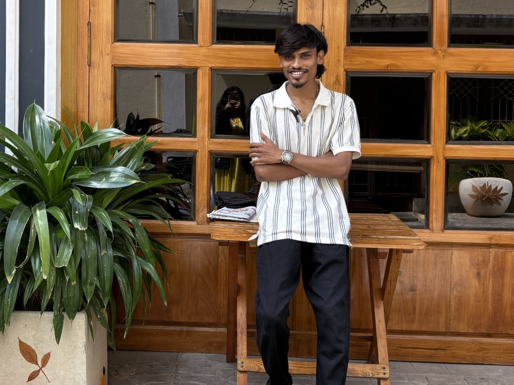

PROFESSIONAL
Pittworks Media / December Delights
2 years of professional video editing across branded content, social media and client-facing projects, with a focus on storytelling, pacing, sound design and visual execution.
VIDEO EDITOR / STORYTELLER / AI-ASSISTED CREATIVE
I'm Gopi Panikela, a video editor based in Hyderabad. I focus on pacing, storytelling, sound, color and short-form content built to hold attention.

01 / SELECTED WORK
A focused portfolio — only work I want a client, studio or hiring team to remember.
02 / ABOUT
I’m a video editor with 2 years of professional experience across branded content, product storytelling and social-first videos. My strongest area is taking a simple idea and finding the rhythm that makes it watchable.
I work primarily in Adobe Premiere Pro, with AI-assisted creative workflows, visual direction and modern production techniques to build engaging content, thumbnails and storytelling assets when the project needs them.
03 / CAPABILITIES
Clean cuts, rhythm, hooks, transitions and retention-focused structure.
Turning footage and ideas into clear beginnings, emotional beats and strong payoffs.
Music selection, SFX, layering, sync and timing that strengthen the story.
Creating consistent visual mood through color correction, grading and creative treatment.
Using AI to develop visual concepts, generate supporting assets, create engaging thumbnails and explore creative directions.
Understanding composition, typography, visual hierarchy and how elements work together to communicate an idea.
04 / EXPERIENCE
2 years of professional video editing across branded content, social media and client-facing projects, with a focus on storytelling, pacing, sound design and visual execution.
Independent editing projects focused on short-form storytelling, product content, social media and AI-assisted creative workflows.
05 / CONTACT
Available for video editing, social content, branded edits and creative collaborations.